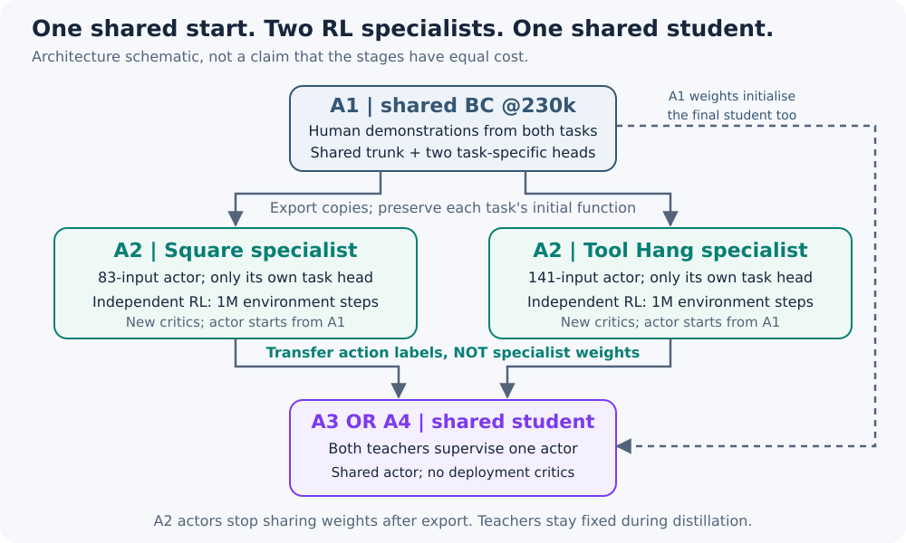

The goal was one robot policy that could perform two manipulation tasks. So why take a detour through two separate specialists?
There were two questions: could a shared imitation policy provide a useful start for two RL specialists? And how could their improved behaviour be transferred back into one network?
The second question has two plausible answers: collect demonstrations while the teachers act, or let the student act and ask the teachers what they would do at the states it visits. We tested both, comparing task success at matched teacher-query budgets and student-training updates.
I use descriptive names for the models and methods below. The experiment IDs remain in the diagrams and evidence files so readers can connect the story to the recorded runs.
| Model or method | Experiment ID |
|---|---|
| Shared behaviour-cloning (BC) generalist | A1 |
| Reinforcement-learning (RL) specialists | A2 |
| Offline distillation, producing the offline student | A3 |
| On-policy distillation (OPD) with DAgger-style dataset aggregation, producing the DAgger student | A4 |
This is a single-training-seed pilot with state observations, not a demonstration that the detour beats joint multi-task RL. Time and compute constraints limited its scope.

Could one policy get both tasks off the ground?
First, a common starting policy had to work on both selected Robomimic tasks: Square and Tool Hang.
| Task | Goal | State dimensions | Action chunk | Episode limit |
|---|---|---|---|---|
| Square MH | Place a square nut onto a peg | 23 | 4 consecutive 7-D actions | 400 steps |
| Tool Hang PH | Assemble a stand/frame and hang a tool | 53 | 8 consecutive 7-D actions | 1,000 steps |
MH uses multi-human demonstrations of mixed proficiency; PH uses proficient-human demonstrations. Cross-task scores are not a controlled comparison of difficulty.
We first trained the generalist with behaviour cloning (BC) on human demonstrations. Its flow-matching actor learns a velocity field that transforms Gaussian noise into an action chunk, conditioned on the current state.
Padding, a task tag and separate output heads let the tasks share a five-layer, 512-unit MLP. Its 143 inputs are 53 observation slots, two task-tag slots, 56 noisy-chunk slots and 32 time features; the heads predict 28- or 56-dimensional velocities.
Each update draws 256 examples per task, averages the two task losses, and updates the network once. Each head learns from its own task; the trunk learns from both.
The shared start did not work immediately. Under standardisation, Tool Hang failed despite falling imitation loss. Raw observations restored learning, but later measurements did not support the original numerical explanation; the mechanism remains open.
How actions are sampled. Both sampling modes start from Gaussian noise and take ten integration steps. SDE (stochastic differential equation) sampling adds noise during integration and uses EMA (exponential moving average) actor weights. ODE (ordinary differential equation) sampling adds no integration noise and uses the current, non-averaged weights. Because both the integration noise and the weights differ, an SDE-versus-ODE success gap does not isolate the effect of noise.
After shared BC training, the generalist reached 65.6% Square and 53.1% Tool Hang SDE success at 230k updates. We had a starting point, not a finished generalist. The next step was to try RL specialisation.
Should the generalist watch the teachers, or learn on its own attempts?
Two RL specialists were not the final goal. We started each shared student from the BC generalist’s 230k-update checkpoint, with the fixed specialists supplying action targets. Their weights are not merged.
Offline distillation lets the teachers drive and records their state-chunk pairs. On-policy distillation with DAgger-style dataset aggregation, shortened to DAgger below, lets the student drive, asking the matching teacher for a label at each decision-state while executing its own chunk. Collection follows the current student, while training also reuses labels from earlier student policies.
Why might that matter? A student’s errors can lead to states a capable teacher rarely visits. More teacher demonstrations might not cover them; DAgger puts advice there. That motivates the experiment, but does not establish the cause of any gain.

| Collection/training choice | Offline distillation | On-policy distillation with DAgger aggregation |
|---|---|---|
| Who acts in the simulator? | Teacher | Current student’s EMA actor, single-sample SDE |
| Who supplies target chunks? | Matching task’s fixed specialist | Matching task’s fixed specialist |
| When do labels arrive? | Full dataset before training | Roughly one quarter before each of four rounds |
| Which examples are retained? | All pairs in the chosen prefix, including failures | All labelled states, including failed or budget-cut episodes |
| Human demos mixed into distillation? | No; teacher-labelled data only | No; teacher-labelled data only |
| Student updates per run | 20,000 | Four blocks of 5,000 |
The code calls the student-driven method “routed DAgger”: routing is just a task-ID lookup. The DAgger student never executes the teacher’s chunk. Each round collects pairs, then trains on the accumulated pool; it is not one episode. Both students use supervised flow matching, not RL reward updates. Labels do not guarantee success.
To compare these choices, we counted teacher queries. One query returns one labelled chunk at one state, not one scalar action or one episode:
| Budget per task | Square pairs | Tool Hang pairs | Student gradient updates |
|---|---|---|---|
| Q1, approximately 2k | 1,998 | 1,983 | 20,000 |
| Q2, approximately 8k | 7,998 | 7,969 | 20,000 |
| Q3, approximately 32k | 31,980 | 31,994 | 20,000 |
Q1 therefore means roughly 2k pairs for each task, or 4k combined, not 2k split between them.
Offline collection uses nested whole-episode prefixes; DAgger collection matches their counts, cutting the last episode if needed. Each budget restarts from the same BC generalist checkpoint. Both use 256 pairs per task per update and Adam at learning rate 0.0003, with fresh moments.
For readers familiar with large language models (LLMs), offline distillation resembles supervised fine-tuning (SFT) on teacher responses; DAgger resembles on-policy distillation at student-generated prefixes. States correspond to prefixes, but losses differ. GKD explicitly connects this idea to DAgger.
What happened when the student drove?
The smallest-budget Square result was not a DAgger success story: the offline student finished at 43/64, while the DAgger student fell to 15/64, below the BC generalist. Expert advice on student-visited states was not enough for this recipe.

With more labels, the Square ranking changed. At Q3, the DAgger student reached 56/64, versus the offline student’s 51/64.
Tool Hang resisted a simple “offline first, DAgger later” rule: the DAgger student was ahead at Q1, behind at Q2, and ahead at Q3. At the largest budget, the student-driven recipe had higher point estimates on both tasks:
| Task, Q3 single-sample SDE | Offline student | DAgger student | Observed DAgger minus offline |
|---|---|---|---|
| Square | 51/64 = 79.7% | 56/64 = 87.5% | +7.8 percentage points |
| Tool Hang | 43/64 = 67.2% | 49/64 = 76.6% | +9.4 percentage points |
Did that complete the round trip? On Square, the DAgger student was one episode below the critic-free RL specialist’s 57/64, but below the critic-guided teacher’s 62/64. On Tool Hang, the DAgger student remained below both the RL specialist and long BC at 58/64.
The shared student makes zero critic calls at deployment. That is a structural saving, not a measured latency speedup or evidence of teacher equivalence.
Both Q3 comparisons have overlapping marginal intervals. Overlap is not a test of the difference; the copied summaries lack per-episode outcomes for a paired test. The 64 evaluation seeds are not independent training runs, so retraining variability remains unknown. Equal queries also do not mean equal wall-clock cost.
Was this a benefit of student-state coverage, or something else?
DAgger may have learned to recover where the student wandered. But another difference complicates that explanation: when data arrives and how often it is reused.

Schematic, not a robot rollout. Exact counts come from the saved Q1 DAgger run. Static alternative.

The offline student has its entire dataset before the first update. The DAgger student receives roughly one quarter before each 5,000-update block. At Q1, that means training first on just 499 Square pairs:
5,000 updates * 256 samples / 499 pairs = about 2,565 draws per pairThose early pairs remain available in later rounds. A first-round Square pair gets about 5,343 expected draws over the run; one arriving in the last round gets about 641. Adam and EMA state also carry forward.
Overfitting is plausible, not established. A schedule-matched offline control would release the teacher-collected data in four stages too. Without it, “DAgger fixed covariate shift” is too strong: state source and data-arrival schedule changed together.
What did the detour actually teach us?
On Square, the largest-budget DAgger student’s SDE success count was close to the critic-free RL specialist’s count in this run. Tool Hang told a more cautious story: strong BC alone and incomplete consolidation.
There is also an extra-training question. The fresh 500k BC run is not a matched continuation control for the distillation students. Continuing the same 230k checkpoint for another 20k updates on human demonstrations, using the same device and optimiser recipe, would help isolate the benefit of teacher supervision. No such same-device control is included in the supplied GPU evaluation bundle.
The result is not “always let the student drive.” It is a reason to test state source and data exposure together. Multiple training seeds, schedule-matched offline controls and a same-device continuation-BC control are needed before making stronger claims. I may pursue these when time and compute allow.